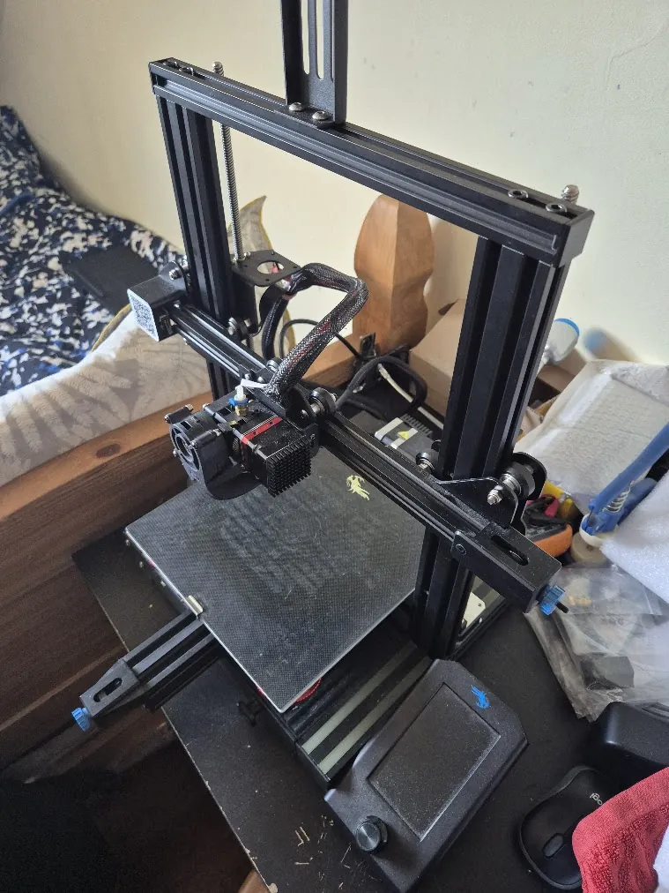

Projects07
3D Printer Upgrades

1 / 1
What I did
- Installed a dual Z axis upgrade for improved stability and accuracy in tall prints and fitted a direct drive extruder for better filament handling and consistency.
- Integrated a probe leveller to reduce calibration time and increase first layer reliability.
- Replaced the motherboard and migrated firmware to Klipper which is highly customisable.
- Implemented Raspberry Pi with PC integration to enable remote monitoring, wireless control and workflow optimisation.